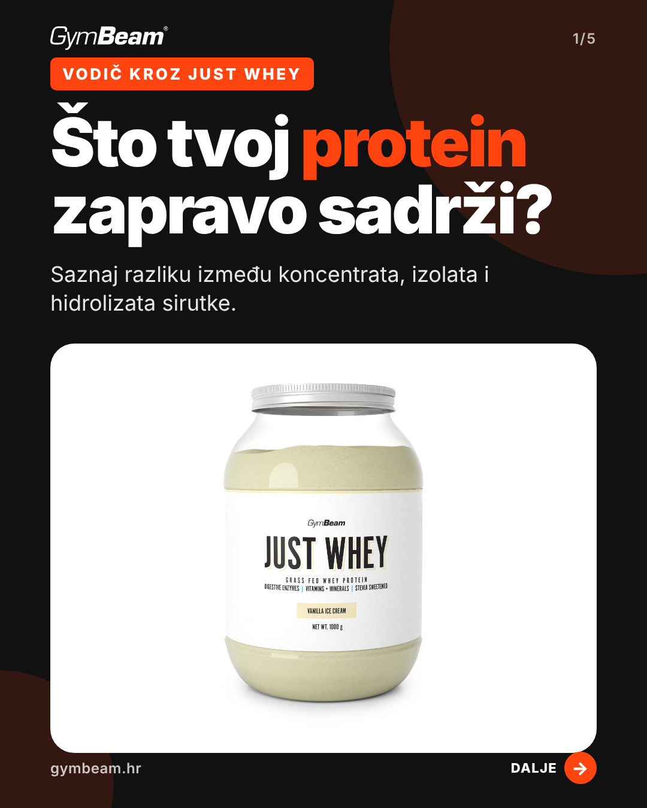
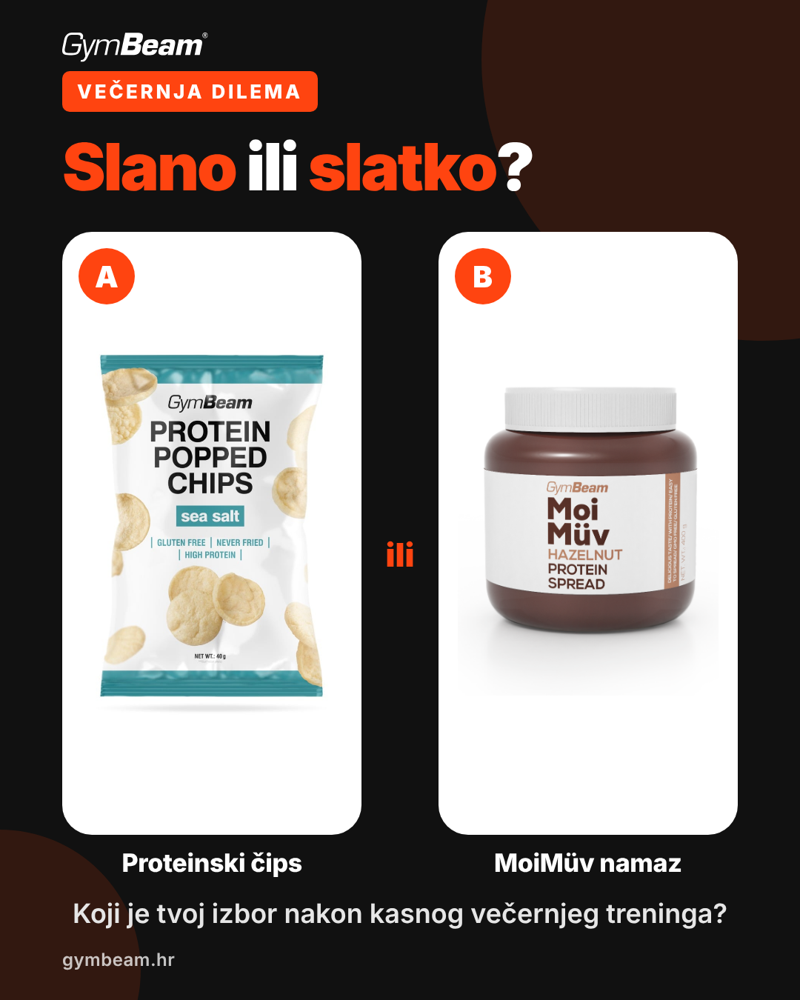
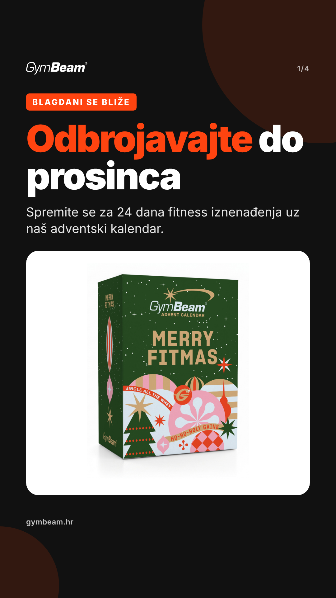

Objava 1 · karusel (5)Edukacija → spremanja i dijeljenja: što sadrži Just Whey (22 g bjelančevina, 6,5 g BCAA, WPC/WPI/WPH, enzimi).
AI_Recept ·
datum izvršavanja: 25. 11. 2026.
Objava 1 · karusel (5)
Objava 2 · slika
Objava 3 · story (4)Zašto GymBeam: velik webshop s vlastitim proizvodima i javnim strukturiranim podacima (sastav, cijene, recenzije), pa se svaka tvrdnja u objavi može provjeriti; vlastita ambalaža omogućuje provjeru točnosti logotipa i pakiranja. Obrazloženja, opisi (caption), alt tekstovi i izvori za svaku objavu: runs/gymbeam_hr/isporuka/README.md.
pip install -r requirements.txt && playwright install chromium export GEMINI_API_KEY=... # besplatni ključ: aistudio.google.com/apikey python -m recept pokreni --brif brief/gymbeam_hr.yaml --run runs/moj_test --do plan # stani na planu # (pregledaj/uredi runs/moj_test/04_plan.json), zatim: python -m recept pokreni --run runs/moj_test # nastavi do kraja
Postavke (config.example.yaml): provider gemini / openai (bilo koji OpenAI-kompatibilni API) /
manual (bez ključa – svaki AI korak zapiše prompt u datoteku, korisnik ga zalijepi u ChatGPT/Gemini/Claude i spremi odgovor),
lista modela po prioritetu, automatski popravak nakon provjere. Novi brend: python -m recept brif (interaktivni brifing: web, proizvodi,
publika, ciljevi, uzori, snimke Instagrama) ili kopija brief/gymbeam_hr.yaml. Ljudske radnje: pregled plana, pregled gotovih objava
i (po potrebi) dorade zapisane u YAML (python -m recept dorada). Ključevi nisu u repozitoriju (.env.example).
--od / --do / --objave)| Faza | Ulaz | Što radi | Predaje dalje |
|---|---|---|---|
| 0 brif | YAML / interaktivno | brend, web, proizvodi, publika, ciljevi, ton, ograničenja, boje, snimke IG | 00_brif.json |
| 1 istraživanje | brif | čita schema.org JSON-LD i opise s webshopa (cijene po varijanti, ocjene), skida službene fotografije i SVG logo | 01_izvori.json, assets/ |
| 2 opis slika | fotografije | AI (vision) opisuje svaku fotografiju (packshot, okus, tekst) da bi izrada birala pravu | 02_opis_slika.json |
| 3 analiza | brif, izvori, snimke IG | ton, publika, teme, vizualni stil; provjereni podaci s URL-om odvojeni od pretpostavki; nedostupni izvori | 03_analiza.md |
| 4 plan | analiza, izvori | 3 objave: cilj, mjera uspjeha, format, koncept, činjenice s izvorom, obrazloženje → ljudska kontrolna točka | 04_plan.md |
| 5 izrada | plan, izvori, opisi slika | za svaki kadar raspored i tekst (JSON), caption, hashtagovi, alt tekst, story naljepnice | 05_sadrzaj.json |
| 6 render | sadržaj, fotografije | HTML predložak u bojama brenda + nepromijenjene službene fotografije → PNG 1080×1350 / 1080×1920; mjeri prelijevanje teksta | isporuka/objava_N/ |
| 7 provjera | PNG, sadržaj, izvori | deterministički: svaka brojka mora postojati u izvorima, rizične zdravstvene tvrdnje, duljine, prelijevanje; AI kritičar gleda slike, ocjenjuje i predlaže ispravke koji se primjenjuju samo ako ne uvode nove brojke | 07_provjera.md |
| 8 isporuka | sve | opis.txt, pregled kadrova, README s ciljem, formatom, izvorima | isporuka/ |
ai_slike/objavaN_kadarM.png postaje pozadina kadra, a proizvod i logo i dalje dolaze iz originalnih datoteka.Sve tri objave prolaze determinističke provjere (0 grešaka, 0 upozorenja) i AI kritiku (brend, jasnoća, cilj, jezik, činjenice). AI kritičar je u objavi 1 sam ispravio „Pored” → „Osim”. Ručno sam provjerio svaku tvrdnju pretraživanjem izvora (npr. „niži udio laktoze”, „bez punila”, „keksi”, „45 × 32 × 22 cm”, „8,4 g po vrećici” – sve doslovno na stranicama proizvoda).
runs/gymbeam_hr/dorade.yaml i primijenjeno naredbom dorada; (2) u provjera.py dodan je popis rizičnih izraza (nadut, želuc, lakša probava, mršav, detoks…) koji se označavaju ako ih nema u izvoru; (3) pravilo je dodano u prompt za izradu. Ostale dorade: #ishrana → #prehrana, format cijene „26,95 €”, nadnaslov usklađen s brojkom na kadru. Sve s obrazloženjem u ljudske_dorade.md.Druge odluke nastale pregledom: glavne fotografije Just Wheya na webu su promotivni banneri (protein + majica na poklon) – objava bi implicirala tu akciju, pa brif bira čiste packshote okusa iz galerije (slike_uzorak); 4. fotografija namaza prikazuje proizvode drugih brendova pa je isključena; pokušaj automatskog izrezivanja pozadine brisao je bijele dijelove etiketa (MoiMüv), pa je odbačen u korist bijele kartice.
scrape.py.Aktivni rad: ≈ 3 h – izrada koda, promptova i predloška uz Claude Code, pregled i dorade. Čekanje na generiranje: 17 AI poziva, ukupno ≈ 6,5 min (faze: opis slika 70 s, analiza 31 s, plan 42 s, izrada 166 s, provjera 108 s); render 8 s.
dorade.yaml – staro/novo/razlog) i odbijeni planovi; (b) Instagram Graph API Insights po objavi: doseg, spremanja, dijeljenja, komentari, klikovi na link/naljepnicu, zadržavanje po story kadru; (c) sadržaj komentara (pitanja, A/B glasovi, sentiment).